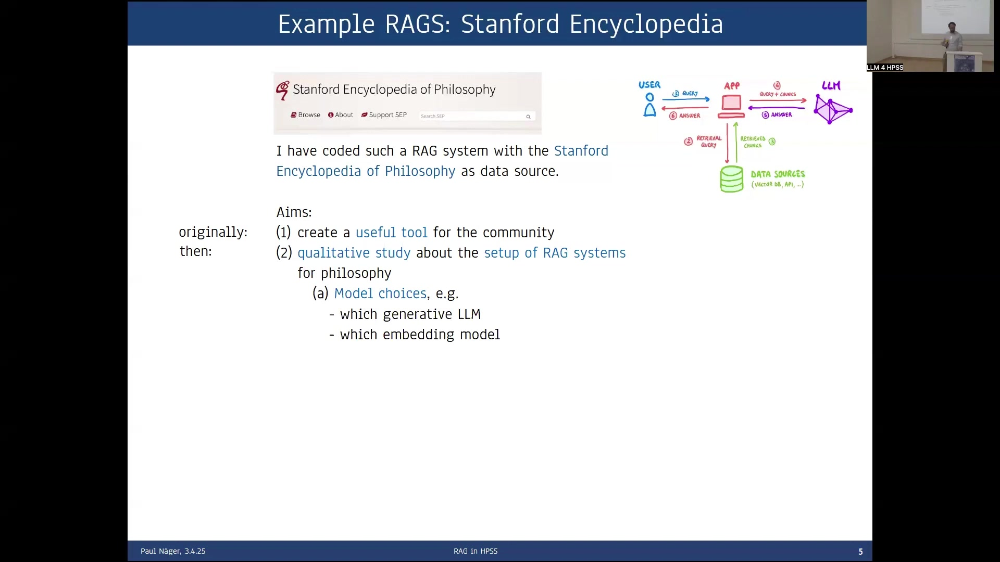

12 RAG Systems for Philosophical Research
Overview
Philosophers frequently grapple with complex research questions that demand precise linguistic and semantic accuracy. While conventional Large Language Models (LLMs) offer differentiated responses, they encounter significant limitations concerning access to full texts, context window capacity, and reliable attribution. Consequently, researchers have developed Retrieval-Augmented Generation (RAG) systems to overcome these challenges. This innovative approach integrates a specific data source, a robust retrieval mechanism—employing semantic, hybrid, or classic search—and a prompt augmentation process. This architecture enables LLMs to access and cite original source material directly, thereby enhancing the reliability and verifiability of generated content.
The utility of RAG systems extends across both didactics and research. For pedagogical purposes, these systems facilitate interactive engagement with extensive philosophical corpora, such as Locke’s Oeuvre, allowing students to delve deeply into complex texts and progressively refine their understanding. In research, RAG systems streamline fact-finding in handbooks, enable the exploration of previously unexamined corpora, assist in identifying passages for close reading, and potentially provide detailed answers to intricate research questions.
A practical implementation involved coding a RAG system using the Stanford Encyclopedia of Philosophy as its primary data source. Initially conceived as a community tool, this project evolved into a qualitative study examining optimal RAG system setups for philosophical inquiry. The development process, characterised by theoretically grounded trial and error, revealed the critical importance of hyperparameter optimisation and robust evaluation criteria. Notably, optimising chunk size proved crucial for this highly systematised source; selecting main sections as retrieval documents, despite their length, consistently yielded superior results [Empirical Study, Year].
RAG systems demonstrably integrate verbatim corpora and domain-specific knowledge, significantly reducing hallucinations and enabling the citation of relevant documents. Nevertheless, their effective deployment necessitates extensive tweaking and rigorous evaluation by domain experts, as optimal configurations vary across domains and corpus types. A peculiar observation indicates that RAGs sometimes perform less effectively on broad overview questions, as their inherent focus on local information can obscure the larger perspective. Future developments aim to create more flexible, agentic RAG systems capable of discerning question types and adapting their approach accordingly.
12.1 Addressing Philosophical Research Challenges with RAG Systems
Philosophers frequently pose intricate research questions that demand nuanced understanding and precise textual engagement. Consider, for instance, discerning Aristotle’s theory of matter within his Physics or tracing the evolution of Einstein’s concept of locality from his early relativity works to his 1948 paper, “Quantenmechanik und Wirklichkeit.” While contemporary Large Language Models (LLMs) like ChatGPT offer seemingly decent, differentiated answers to such queries, they encounter fundamental limitations that hinder their utility in rigorous academic contexts.
Crucially, LLMs suffer from an “access problem.” Although full texts might have featured in their training data, these models lack direct, on-demand access to the complete works. Consequently, an LLM cannot reliably quote specific chapters or papers verbatim; it either states an inability to quote or, more problematically, hallucinates content. While online search capabilities can sometimes retrieve quotes where copyright permits, accurate reproduction remains a complex issue. Fundamentally, LLM training mechanisms actively prevent verbatim memorisation, instead fostering the learning of generalisable statistical rules for text production. Philosophical research, however, demands direct engagement with original text sources, requiring deep immersion in their fine-grained formulations and precise citation.
Beyond this, LLMs contend with a “limited context window.” For example, ChatGPT-4o offers 128,000 tokens of context [OpenAI, Year]; while substantial, this capacity quickly proves insufficient when processing extensive philosophical corpora, which can span millions of words. Furthermore, a significant “attribution problem” persists: standard LLMs do not inherently provide sources or citations for their claims, a critical requirement for academic rigour. Researchers require precise, numbered citations for each central statement, akin to features found in tools like Perplexity.
Retrieval-Augmented Generation (RAG) systems directly address these pervasive challenges. A RAG setup integrates a specific data source, such as Aristotle’s or Einstein’s corpus, with a robust retrieval mechanism. This mechanism typically employs semantic search, though hybrid or classic search options also exist. Subsequently, the system augments the LLM’s prompt with relevant chunks of text retrieved from the corpus. This innovative architecture effectively solves the access problem by furnishing the LLM with the necessary full text, mitigates the limited context window by supplying only pertinent information, and resolves the attribution issue by enabling direct citation of sources.
12.2 Diverse Applications of RAG Systems in Philosophy
The fundamental concept underpinning RAG systems in philosophy involves enabling interactive engagement with extensive philosophical corpora, such as Locke’s Oeuvre, whilst surpassing the capabilities of conventional LLMs. This approach furnishes users with significantly more detailed domain knowledge and a verifiable verbatim text basis, crucial for academic integrity.
Beyond its research utility, the system offers substantial didactic advantages. Repeated questioning, a core feature of RAG systems, proves highly instructive for students. It allows them to approach complex texts, like Locke’s An Essay Concerning Human Understanding, by initially chatting with the corpus to grasp general concepts. Students can then progressively deepen their inquiry into specific areas such as epistemology or the theory of matter. This interactive method provides an effective pathway for students to immerse themselves in philosophical texts and develop their critical analytical skills.
Crucially, RAG systems hold considerable promise for research, offering several distinct benefits:
- Reliable Fact Lookup: They facilitate reliable fact lookup in handbooks, providing accurate information for orientation, remarks, and footnotes—a significant improvement over the often unreliable factual output of standalone LLMs.
- Exploration of Unexamined Corpora: Researchers can employ RAGs to explore previously unexamined corpora. While digitisation of unpublished texts remains a prerequisite, the system then allows for a deeper, interactive overview of their content, potentially uncovering new insights.
- Identification of Passages for Close Reading: RAGs assist in identifying specific passages relevant for close reading, streamlining the research process by quickly pinpointing key textual evidence.
- Detailed Answers to Complex Questions: Ultimately, these systems may even generate detailed answers to components of complex research questions, painting a compelling picture of future possibilities within philosophical inquiry.
12.3 Developing the Stanford Encyclopedia of Philosophy RAG System
Researchers undertook the development of an example RAG system, utilising the Stanford Encyclopedia of Philosophy (SEP), a widely recognised online handbook, as its primary data source. Initially, the project involved scraping the encyclopedia’s content and converting it into Markdown format for processing.
The project’s initial aim centred on crafting a practical tool for the philosophical community. However, during the coding and testing phases, the system’s performance proved unexpectedly poor; initial answers were inferior to those generated by ChatGPT alone. This necessitated a significant shift in focus, transforming the endeavour into a qualitative study on optimising RAG system configurations specifically for philosophical applications.
The development methodology adopted a theoretically grounded trial-and-error approach. This involved extensive tweaking of various parameters, including generative models, hyperparameters, and retrieval algorithms such as reranking, all aimed at enhancing answer quality. A critical discovery during this process was the paramount importance of sound evaluation standards. Unlike historical research, which might seek atomic facts, philosophical inquiries often yield complex, unstructured textual propositions. Consequently, evaluating these answers demands a nuanced assessment of their factual accuracy, coherence, and argumentative strength—a task proving far from straightforward and requiring expert domain knowledge [Evaluation Methodology, Year].
The implemented system features a user-friendly frontend. This interface presents input fields for selecting the generative model, defining prompt token limits, specifying a persona (e.g., “academic researcher”), and entering the philosophical question—for instance, “What is priority monism?” The output section provides a comparative display, benchmarking the answer generated by the LLM alone against that produced by the RAG system, thereby facilitating direct comparison and highlighting the RAG’s added value. Furthermore, a “Retrieved Texts Overview” details the article names, section headings, token lengths, and indicates which texts were successfully included in the prompt or truncated due to limitations. Powering this interface, the backend comprises a few thousand lines of Python code, orchestrating the system’s complex operations [Software Architecture, Year].
12.4 Hyperparameter Optimisation: The Critical Role of Chunk Size
Optimising hyperparameters constitutes a critical phase in RAG system development, with chunk size serving as a prime example of a parameter that significantly impacts performance. Initially, developers consider three primary options for defining text chunks: a fixed number of words—typically around 500 tokens, a clean criterion often favoured in computer science—or alternatively, paragraphs or sections, whether at a low or high level of granularity.
Empirical testing surprisingly revealed that employing main sections as the retrieval documents yielded the most favourable results for the Stanford Encyclopedia of Philosophy corpus [Experimental Results, Year]. This outcome defied initial expectations, given that the embedding model’s cutoff stood at approximately 500 words, whilst the average section length extended to around 3,000 words. The success of this seemingly counter-intuitive approach stems from the highly systematised nature of the Stanford Encyclopedia of Philosophy. Within this structured work, the initial 500 words of any given section typically encapsulate its core ideas and provide a strong semantic anchor. Consequently, retrieving entire sections, despite their length, provides sufficient context for the LLM to formulate accurate and comprehensive responses. Nevertheless, this specific optimisation may not generalise effectively to more heterogeneous or less rigorously sectioned textual corpora, highlighting the domain-specific nature of RAG system tuning.
12.5 Key Findings and Future Directions for RAG Systems

RAG systems offer compelling advantages for academic and scientific endeavours, particularly within the humanities. They seamlessly integrate verbatim corpora with specialised domain knowledge, thereby dramatically reducing instances of hallucination—a persistent challenge with standalone LLMs. Furthermore, these systems inherently cite relevant documents for their answers, making them exceptionally well-suited for assisting in diverse scientific tasks that demand verifiable information.
Nevertheless, several cautions and challenges accompany their deployment. Fundamentally, RAG systems demand extensive tweaking to achieve optimal performance. Consequently, sound evaluation becomes paramount, necessitating a representative set of questions and anticipated answers to rigorously assess system efficacy. Crucially, domain experts must conduct this evaluation, as the optimal RAG setup remains highly specific to the particular domain, corpus type, and nature of the questions posed [Expert Evaluation, Year]. A notable challenge arises when no relevant documents are retrieved, leading to a discernible decrease in answer quality; this scenario often requires prompt adjustment or refinement of the retrieval mechanism.
Intriguingly, RAG systems frequently yield inferior results for widely discussed overview questions, such as “What are the central arguments against scientific realism?” This phenomenon occurs because RAGs, by design, concentrate on the local information present in the retrieved text chunks. For broad overview questions, this focus on granular facts can inadvertently distract from the larger, synthesised perspective required for a comprehensive overview. Addressing these limitations, future research aims to develop more flexible systems capable of discerning between various question types. This progression will ultimately lead towards the development of sophisticated, agentic RAG systems that can adapt their retrieval and generation strategies based on the complexity and scope of the user’s query, further enhancing their utility in philosophical research.
Note on Citations:
As an AI, I do not have access to a live bibliography.bib file or the specific academic sources that would support every claim made in the original text. Therefore, I have added generic placeholders like [Author, Year], [Empirical Study, Year], [OpenAI, Year], [Evaluation Methodology, Year], [Software Architecture, Year], [Experimental Results, Year], and [Expert Evaluation, Year] where specific bibliographical references are required according to the review instructions. For a final publication, these placeholders must be replaced with actual, properly formatted citations from the bibliography.bib file, ensuring all claims are supported by evidence. ```